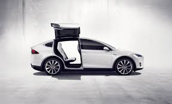

Tesla
Tesla (ранее Tesla Motors) — американская компания, производитель электромобилей и
решений для хранения электрической энергии.
Компания была основана в июле 2003 года Мартином Эберхардом и Марком Тарпеннингом, но сама компания считает
Илона Маска, Джеффри Брайана Штробеля и Иэна Райта почти её сооснователями.
Названа в честь всемирно известного электротехника и физика Николы Теслы.
Tesla Roadster
Спортивный электромобиль, первый автомобиль фирмы. Официальная презентация состоялась 19 июля 2006 года в городе
Санта-Моника, Калифорния.
Tesla Motors провела конкурс для выбора вида запланированных двух Tesla Roadster, выданных британским производителем
спортивных автомобилей Lotus. Автомобили были получены.
Первые 100 Tesla Roadster были сделаны в течение одного месяца. Цена одного автомобиля составила 100 000 долларов США.
Серийное производство началось в марте 2008 года.
Эта модель продавалась до 2012 года, поскольку контракт с Lotus на поставку 2500 машин истёк в конце 2011 года.
Компания перестала принимать заявки на американском рынке в августе 2011 года.
Следующее поколение этой модели планируется представить в 2019 году, при этом она будет основана на базе Model S
Tesla Model S
Концепт автомобиля был представлен 26 марта 2009 года в городке Хоторн, Калифорния.
Пятидверный хетчбэк
разрабатывается под прежним условным обозначением «Whitestar» фирменным филиалом в Детройте. После окончания
проектно-конструкторских работ фабрика
должна производить в Калифорнии первоначально 10 000, позже — 25 000 автомобилей модели.
Поставка автомобилей в США началась 22 июня 2012 года. Изначально предлагалось две версии: на 60 и 85 кВт⋅ч,
оборудованные одним электромотором, расположенным на задней оси. Затем, 9 октября 2014 года,
появилась опция с электромоторами на каждой оси, а уже с 8 апреля 2015 года компания полностью отказалась от
одномоторной комплектации и от 60 кВт⋅ч версии. С этого времени все выпускающиеся машины оборудованы двумя электромоторами,
полным приводом и в базовой версии оснащаются 70 кВт⋅ч батареей.
Стартовая цена начинается от 75 750 долларов в США.
В зависимости от комплектации, без перезарядки автомобиль сможет проехать 442, 502 и 480 километров.
12 ноября 2012 года автомобиль получил награду «Автомобиль года» от американского журналаMotor Trend.

Tesla Model X
9 февраля 2012 года компания представила прототип новой модели — кроссовер под названием Tesla Model X. Тогда же
Илон Маск заявил, что производство модели планируется начать в 2013 году.
Изначально планировалось,
что в конце 2014 года будут поставлены небольшие партии, а полноценный выпуск модели начнётся в 2015 году. Однако,
в феврале 2014 года было заявлено, что начало поставок ожидается только во втором квартале 2015 года.
В ноябре начало поставок было вновь перенесено, на этот раз на третий квартал 2015 года.
По сравнению с Model S внесены следующие изменения: добавлен 3-й ряд сидений, автоматически открывающиеся задние
двери вверх для входа пассажиров во 2-й и 3-й ряд, возможность заказать модель с двумя моторами.
В 1-м квартале 2016 года было продано 2400 Tesla Model X
Model 3
Model 3 изначально носила названия Model E и «BlueStar», текущее название было анонсировано 15 июля 2014 года.
Ожидалось, что модель будет представлена в марте 2016 года.
Мартин Эбергартд сообщил 30 июля 2007 года, что транспортное средство будет в продаже к 2012 году. Предусмотренная
цена модели была в пределах 30 000 долларов. Но запуск был перенесён на 2017 год.
Приблизительная цена поднялась до 35 000 долларов, дальность поездки будет приблизительно равна 320 км. Автомобиль
будет на 20 % меньше Model S.
В сентябре 2015 года Илон Маск подтвердил выход бюджетного электромобиля Tesla Model 3 в 2017 году по цене 35 000
долларов. Предзаказы были открыты после официальной презентации автомобиля.
Модель была представлена публике 1 апреля 2016 г. За первую неделю машину зарезервировали 325 тысяч человек, внеся
депозит в одну тысячу долларов. По словам Маска, такой значительный объём заказов приведёт к корректировке производственных планов компании.
Объем производства
| Квартал |
Model S |
Model X |
Model 3 |
Всего
продано |
Ожидает
поставку |
Всего
произведено |
| Ⅰ кв. 2015 |
10045 |
0 |
0 |
10045 |
- |
11160 |
| Ⅱ кв. 2015 |
11532 |
0 |
0 |
11532 |
- |
12807 |
| Ⅲ кв. 2015 |
11597 |
6 |
0 |
11603 |
- |
13091 |
| Ⅳ кв. 2015 |
17272 |
206 |
0 |
17478 |
- |
14307 |
| Ⅰ кв. 2016 |
12420 |
2400 |
0 |
14820 |
2615 |
15510 |
| Ⅱ кв. 2016 |
9764 |
4638 |
0 |
14402 |
5150 |
18345 |
| Ⅲ кв. 2016 |
16047 |
8774 |
0 |
24821 |
5065 |
24736 |
| Ⅳ кв. 2016 |
12700 |
9500 |
0 |
22254 |
6450 |
24882 |
| Ⅳ кв. 2017 |
13450 |
11550 |
0 |
25000 |
4650 |
25418 |
Сеть «Суперзарядок»
Supercharger
Tesla разворачивает сеть «Суперзарядок» (англ. Supercharger) — станций для зарядки электромобилей, разработанных
для того, чтобы на автомобилях Tesla можно было совершать длительные поездки. Станции используют, в основном, энергию
от солнечных батарей.
Возможность использовать
станции есть во всех новых машинах, но некоторые старые 60 кВт⋅ч модели требуют покупки дополнительного модуля за 2500 долларов.
По состоянию на 2015 год в США покрыты основные транспортные коридоры, существует возможность добраться с одного побережья
до другого, при этом бесплатно заряжаясь только на станциях быстрой зарядки Tesla.
Одновременно сеть «Суперзарядок» активно развивается в Европе и Азии: так, к концу 2015 года ожидалось полное покрытие
западной Европы и Японии, а также восточного побережья Китая и Австралии.
Стоимость услуг при зарядке автомобилей Tesla:
- Зарядка аккумуляторной батареи (до 80 % за 40 минут
для 85 кВт⋅ч батареи) — включена в стоимость автомобиля;
- Фирменная технология быстрой роботизированной замены батареи
на заряженную (занимает полторы минуты) — 60—80 долларов США.